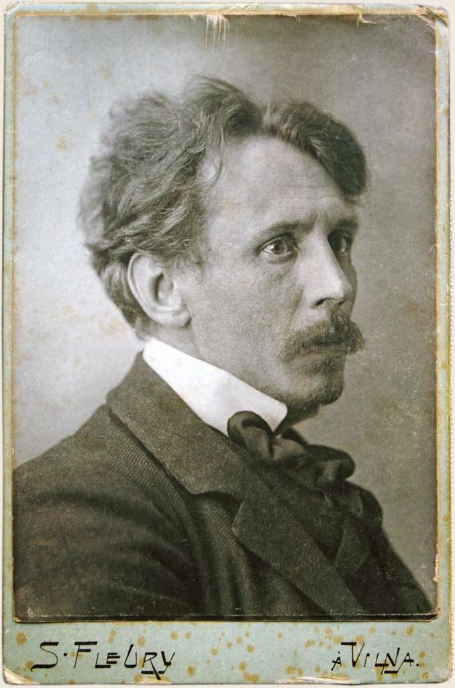

Mikalojus Konstantinas Čiurlionis – ryški Lietuvos ir Europos dailės istorijos dalis, neeilinė asmenybė, apdovanota kompozitoriaus, tapytojo, rašytojo ir fotografo gabumais. M.K. Čiurlionis gyveno ir kūrė XX a. sandūroje, formuojantis naujiems meno judėjimams. Visą savo gyvenimą skyrė menui, ieškojo atsakymų į universalius žmogaus būties klausimus. Čiurlionis išrado savitą ritminį, struktūrinį meno ir muzikos sintezės metodą, tapdamas vienu iš abstrakčiojo meno judėjimo pradininkų Europoje. Jo kūryba spinduliuoja universalumo, kultūrinio ir religinio sinkretizmo bei humanizmo idėjomis. Savo kūryba prisidėjo prie simbolizmo ir art nouveau krypčių mene plėtotės. Jo darbai padarė didelę įtaką šiuolaikinei Lietuvos kultūrai. Čiurlionio muzikinis palikimas – simfoninės, chorinės kompozicijos ir muzika fortepijonui. Jo muzikiniuose kūriniuose slypi vėlyvojo romantizmo elementai ir įtaigi raiška.

Čiurlionis paliko apie 300 paveikslų, 700 eskizų, piešinių ir grafikos darbų, per 200 natų: simfonines poemas „Miške“ ir „Jūra“, muziką fortepijonui, chorui ir vargonams; parašė straipsnių apie muziką ir meną. Dauguma jo paveikslų saugomi M.K. Nacionaliniame Čiurlionio dailės muziejuje Kaune.
Minint M. K. Čiurlionio 150-mečio jubiliejų, Vilniaus suaugusiųjų mokymo centro 2A klasės mokiniai atliko projektinį informatikos ir lietuvių kalbos darbą. Susipažinę su M.K. Čiurlionio žumiausiais paveikslais, mokiniai analizavo lietuvių poetų eilėraščius apie M. K. Čiurlionį ir jo kūrybą.
Vėliau mokiniai analizavo savo pasirinktą M.K. Čiurlionio paveikslą ir jam dedekuotą eilėraštį. Įvertindami tokius aspektus, kaip stilius, spalvos, simboliai ir galima kūrėjo idėja, paruošė trumpą tekstinį aprašymą.
Ir naudodamiesi DI įankiais sugeneravo naujus paveikslus. Savo projektinio darbo rezultatus jie pateikė sukurdami html puslapius, kuriuos apjungėme į vieną tinklapį.